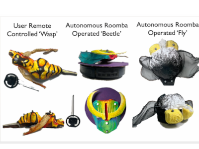

Robots & AI · Installation
BioTelia
Collaboration with Ayesha Rawal, Shalimar Alvarado Cruz, Aaron Neyer, and Cambria Klinger at CU Boulder’s ATLAS Institute. Performed in CU’s B2 Blackbox Theater.

Overview
Technology is a crucial part of our everyday ecosystems. BioTelia is an interactive installation that explores human-technology relationships through the lens of pollination by combining motion capture tracking, AI, domestic robots, and materiality to illustrate how our interactions can reshape an environment.
Audience members are invited into the space and given a 3D printed flower, which is tracked by a n AI-enhanced motion capture system and illuminates the human in a monochromatic particle ‘pollen’ cloud. As they approach one of the flowing ‘trees’ the cloud’s color changes to match the tree’s pollen cloud. Participants may enter the tree and observe how the fabric’s peaceful ripples shift the projections around it, like water in a pool or sunlight streaming through the trees.
In the main area three robots decorated in paper mache, clay, and paint resemble pollinating bugs. They, too, are tracked with motion capture and tout pollen clouds that shift color based on proximity to trees/humans. A broken vacuum cleaning robot dressed as a fly whirls around in circles, bumbling into audience members and squeaking on the rough rubber floor. A faster, un-broken vacuum dressed as a beetle zips around the theater, oftentimes running out of the bounds of the projectors and disappearing before being frantically retrieved by a team member. The wasp whipping around is simply a decorated remote-controlled race car, and is controlled by audience members allowing for amusing robot-robot and robot-human interactions.
Participants reported ‘fun’ and ‘delight’ at seeing the robots move in their costumes. The participants, too, explored the installation with a sense of curiosity and shared reflections on artificial environments, robots, and their perception of humans roles in balancing technology with nature.